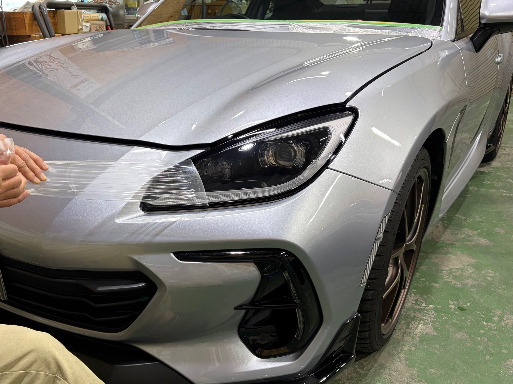
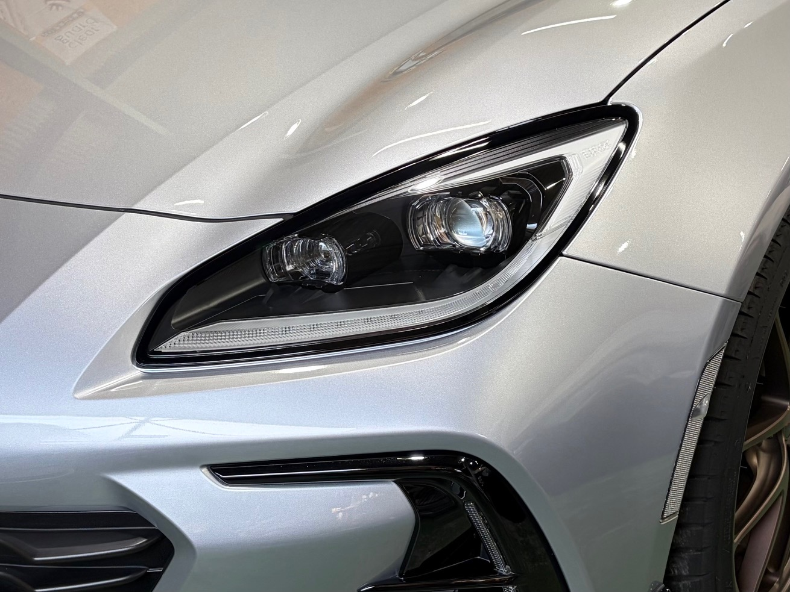
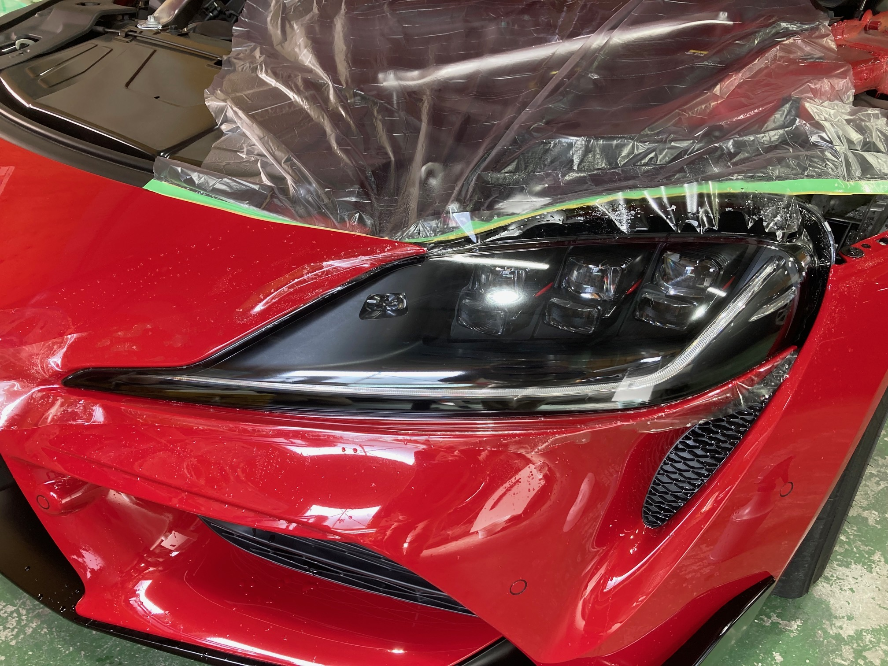

ヘッドライトプロテクション
ライトの形に合わせて、細部まで。
ヘッドライトの状態と形状を確認し、プロテクションフィルムの施工や貼り替えをご相談いただけます。剥がす工程、貼る工程、施工後の写真をそれぞれ紹介します。
HOW WE WORK
貼る前も、貼ったあとも見える。
古いフィルムをはがす作業、施工中の手元、施工後のヘッドライトを写真でご紹介します。車やライトの状態によって、必要な作業は変わります。
- 01
いまの状態を確認
レンズや既存フィルムの状態を見て、施工内容を相談します。
- 02
フィルムを貼る
ヘッドライトの形に合わせて貼り、端部を丁寧に仕上げます。
- 03
仕上がりを確認
貼り付け後の見え方を写真でご覧いただけます。
IN THE WORKSHOP
施工写真を見る
写真を押すと大きく表示できます。




写真には別々の車両の施工例が含まれます。
ほかの施工を見る
YOUR FIRST CONVERSATION
この施工、自分の車にも合う？
車種や気になること、普段の乗り方からお聞かせください。施工名が分からなくてもご相談いただけます。